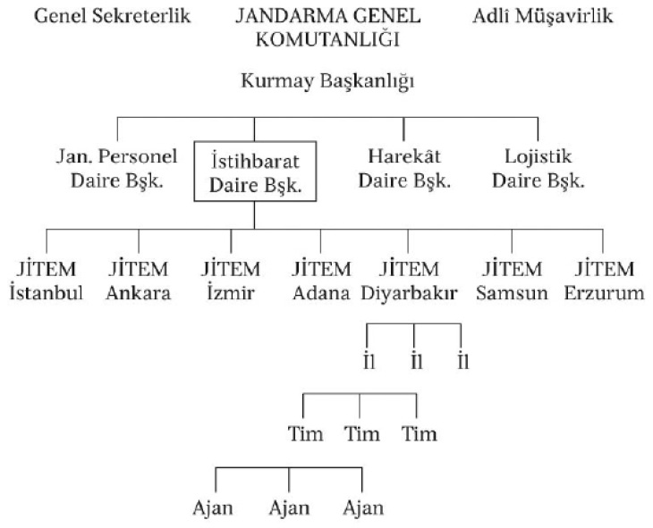

O dönemde çalışmakta olduğum 2000’e Doğru dergisi 8 aralık 1991 tarihinde “Kimlikleri ve eylemleriyle işte Mardin kontrgerillası” başlıklı bir haber yayımladı: “Son beş ayda Mardin, Ömerli, Savur, Nusaybin, Midyat, Batman ve İdil’e bağlı köylerde kontrgerillanın eylemleri sonucu 22 kişi öldü, 5 kişi yaralandı. Bu cinayetleri işleyenlerin eşkalleri ve yöntemleri aynı. Beyaz Renault’ya biniliyor. Kars şivesiyle Kürtçe konuşuyorlar. Gerilla kılığında dolaşıyorlar. Bu kontrgerilla ekibinin başında jandarma subayları A.Ö. ile H.K. var. Vurucu (tetikçi) timin şefi ise Karslı MHP’li eski bir öğretmen olan Y.S. Dört kişilik infaz timinde itirafçılar var.”
2000’e Doğru, “Mardin kontrgerillası” haberinde baş harfleriyle verdiği kişileri, açık adlarının belirtildiği bir yazıyla Başbakanlık’a ve İçişleri Bakanlığı’na bildirdi. Türk Silahlı Kuvvetleri mensubu iki subay hakkındaki bilgileri ise gene isimleri açıkça yazarak Genelkurmay Başkanlığı’na iletti.
Ancak bu kurumlardan hiçbir yanıt alamadı. “Haberiniz doğru değildir” gibi bir açıklama bile yapılmadı.
Biz de “Mardin kontrgerillası” haberini geliştirmeye karar verdik. Araştırmaya devam ettik.
“Gerilla gibi giyinirler”
Subay A.Ö. mayıs 1992 tarihinden beri Jandarma Genel Komutanlığı İstihbarat Başkanlığı’nda görev yapıyordu. Bölücü ve Yıkıcı Azınlık Kısım Amirliği’nde görevliydi.
A.Ö. uzun yıllar Güneydoğu’da görev yapmıştı. Kontrgerilla faaliyetlerinde yanında hep “Cem Yüzbaşı” diye biri vardı. A.Ö. “Cem Yüzbaşı”nın yardımcısıydı. “Bu subaylar hep sivil dolaşırlar. İkisi de istihbaratçı. Tehlikeli adamlar, dikkatli olun” demişti emekli bir kurmay albay.
Araştırmaya A.Ö.’nün biyografisini saptayarak başladık.
A.Ö. 1954 Muş-Bulanık doğumlu, Kafkas kökenliydi. Kuleli Askerî Lisesi’nden mezundu. Harp Okulu’nda öğrenciyken okul arkadaşlarından 43 kişinin ismini yazıp, “bunlar solcudur” diye okul komutanlığına ve MİT’e ihbar ediyor. İhbar dilekçesinin altına “Milliyetçi, Atatürkçü Subaylar” imzasını koyuyor.
A.Ö. 1974 Harp Okulu çıkışlıydı. Jandarma istihkâmcı, 1976-1977 döneminde Foça Komando Okulu’nda kurs görüyor. Burada da bazı subayları solcu diye ihbar ediyor. Cem’le Foça’dan tanışıyorlardı.
1 500 subayın resen emekli edildiği 12 Eylül döneminde darbe için aktif rol alıyor. A.Ö.’yle ilgili olarak bir astsubay şunları anlatıyor:
“1978 yılında Mardin 22. Sınır Tugayı’nda görev yaparken birlikte çalıştığı ve çok yakın arkadaşı olan Cem Yüzbaşı’yla birçok operasyona katıldılar. Daha sonra ikili Jandarma İstihbarat’ta da birlikte çalıştılar. Burada görev yapan subaylar gerilla gibi giyinirler. Kendileri Kürt değil ama çok iyi Kürtçe konuşurlar.”
A.Ö. Güneydoğu’daki birçok cinayetin sorumlusu olarak gösteriliyordu. Haberi yazmadan önce kendisiyle görüşmek istedim. Telefonla ulaştım. Hakkındaki bilgileri ve söylenenleri sıraladım. Görüşmek istediğimi söyledim. A.Ö. sert bir yanıt vererek bizimle görüşemeyeceğini belirtti. Telefonu yüzüme kapattı!
Binbaşı A.Ö.’nün bu tavrı doğrusunu söylemek gerekirse bizi oldukça öfkelendirdi.
Araştırmaya devam ettik: A.Ö., 12 Eylül’den sonra ilk sınır ötesi operasyonlara katılan subaylardan. 12 aralık 1980 tarihinde Suriye’deki KAWA’nın kampını basan timin başında A.Ö. var. İçlerinde KAWA’nın Merkez Komite üyesi Hüseyin Aslan’ın da bulunduğu önder kadrodan 15 kişi bu baskında öldürüldü.
A.Ö., 12 Eylül’den sonra kısa bir süre Mardin Belediye başkanlığı yaptı.
Zeki Yumurtacı’nın katili
“Mardin kontrgerillası” içinde adı geçen diğer subay ise H.K.’ydi. H.K.’nin kontrgerilla olma “serüveni” oldukça ilginç. 12 Eylül darbesine birkaç ay kala İstanbul’a, Bakırköy İlçe Jandarma Bölük komutanlığına atanıyor. Darbeden sonra 12 Eylül sorgulamalarında bizzat yer alıyor. 18 eylül 1980 günü olay keşfi için Avcılar’a tatbikata götürdükleri devrimci Zeki Yumurtacı’yı öldürüyor.
Olay basına, “Polis ekibine ateş açan teröristler tatbikata götürülen arkadaşlarını vurdular” diye yansıtılıyor. Zeki Yumurtacı’nın kafasına silahı dayayıp öldüren kişi ise subay H.K.
Bu olayı anlatan albay şunları söylüyor:
“O günlerde İstanbul’da birçok solcu öldürüldü. İstanbul Emniyet Müdürü Şükrü Balcı’nın değişik bir taktiği vardır. Bir polisi veya subayı pisliğe bulaştırmak için tetik çektirir. Tetiği çeken kişi ise bu işlerden artık kurtulamaz. H.K. işte böyle bir numarayla pisliğe bulaştırıldı. Sanıyorum hâlâ da bu rezil işleri yapmaya devam ediyordur. Çünkü bu işlere giren subayın, polisin kurtulması zordur. H.K.’yi diledikleri gibi kullanırlar.”
Nitekim İstanbul-Avcılar’da başlayan faaliyet Mardin’de sürüyordu.
Kontrgerillacı Sayın ekibi
A.Ö. ve H.K.’yle başlayan “Kontrgerillacı subaylar” listesinde Cem Yüzbaşı da vardı.
Bu listenin başında ise, daha sonra bir suikasta kurban giden Asayiş Kolordu Komutanı Korgeneral Hulusi Sayın’ın kayınbiraderi Albay C.K. bulunuyordu.
Jandarma Genel Komutanlığı’nda 70’li yıllarda iki grup ortaya çıkmıştı. Sosyal-demokratların oluşturduğu ve başında Korgeneral İsmail Selen’in bulunduğu grup ile MHP’lilerin bir araya gelip liderliğini Korgeneral Hulusi Sayın’ın yaptığı ekip. İki grup sürekli çatışma halindeydi.
“Kontrgerillacı subaylar” Hulusi Sayın’ın ekibi içindeydi. Ekipte “Yüzbaşı Cem” ve A.Ö.’den başka C.K., T.S., A.Ş., İ.Y., F.A. gibi birçok MHP’li subay daha vardı.
Bu “Kontrgerillacı subayların” 70’li yıllardaki “karargâhları” ise Ankara’daki Jandarma Okul Komutanlığı’ydı.
Ana Tamir Atölyesi’nden silah kaçırıp bunları MHP’lilere veriyorlardı. Bu konuda haklarında soruşturma açılmıştı. Ancak soruşturma hasır altı edilmişti. Boğma zinciri gibi MHP’lilerin o yıllarda çok kullandıkları yaralama-öldürme aletleri de gene bu ekip tarafından sağlanmıştı.
Gruptaki MHP’li subaylar açıkça eylemlere de katılıyorlardı. Örneğin, subay F.A.’nın silahı solcu bir doktor olan Mehmet Güçlü’nün öldürülmesinde kullanılmıştı. Böyle olduğu kesinleştiği halde hiçbir şey yapılmamıştı. Tam tersine rütbesi hep yükseldi. Halen albay olarak görevinin başında.
Yüzbaşı Cem bu grubun aktif elemanlarından biriydi. MHP’nin toplantılarına çekinmeden üniformasıyla gidiyordu!
“Yüzbaşı Cem” giderek daha fazla ilgimizi çekiyordu...
JİTEM’i ilk kez duyuyorum...
JİTEM (Jandarma İstihbarat ve Terörle Mücadele) adını ilk kez 1991 yılı sonunda duymuştum. Ancak ilgimi çekmemişti.
Daha sonraki günlerde JİTEM’de görev yaptığını söyleyen bir astsubayla karşılaştım. 1992 yazının sıcak bir haziran günü oturup saatlerce sohbet ettik.
“Bu birim Jandarma’da ilk kez 1938 yılında değişik bir isimle kuruluyor. O yıllarda Jandarma Teşkilat ve Vazife Nizamnamesi’nin şekavetin izalesi (eşkıyalığın ortadan kaldırılması) ve ajan muhbir tayinine dair talimatı var. İşte bu talimat sonraki yıllarda reorganizasyona tabi oluyor. Sanıyorum 1987 yılında tekrar JİTEM adıyla kuruluyor. Jandarma istihbarat birimleri bölük pörçüktü. Hepsini bir komutanlığa bağlamak istediler. Adına da ‘Jandarma İstihbarat ve Terörle Mücadele’ denildi.
JİTEM’in örgütlenmesi şöyledir: direkt Jandarma Genel Komutanlığıyla irtibatlıdır. JİTEM Grup Komutanlığı’nın başında bir binbaşı bulunuyordu. Önce Cem Binbaşı vardı, o ayrıldı. Yerinde şimdi Nurettin Binbaşı var.”1
Subay A.Ö.’nün komutanı “Yüzbaşı Cem” bu kez karşıma “Cem Binbaşı” olarak çıkmıştı. Astsubaya hemen Binbaşı Cem’i sordum. Çekindi: “Açık kimliklerini vermek istemiyorum. Zaten Cem’i fazla tanımıyorum. Benden önceydi. Nurettin Binbaşı Malatyalı. Kürt değil ama çok iyi Kürtçe konuşuyor. Binbaşı Cem şimdi sanıyorum Genel Komutanlık’ta görev yapıyor. Zaten burada görev yapanlar nedense daha sonra hep Genel Komutanlık’a tayin olurlar!”
Astsubay, JİTEM’in örgütlenmesi hakkında detaylı bilgiler verdi:
“JİTEM Grup komutanının alt kadrosunda bir veya iki subay ile birkaç astsubay görev yapar. JİTEM Komutanlığı’na bağlı; gerilla gibi giyinen, altlarında özel arabaları bulunan JİTEM komutanları dışında kimseden emir almayan, kendi başlarına buyruk olan çoğunlukla dağda gezen, mağaralarda kalan timler vardır. Kaç tim olduğunu bilmiyorum.”
Benim bildiğim kadarıyla eskiden Jandarma Genel Komutanlığı’nın “bölge birimleri” vardı. Bunların başında grup amiri bulunurdu. Türkiye yedi grup amirliğine ayrılmıştı. Bu yedi grup amirliğine ise iller bağlıydı. İller ise “yuva başları” denilen daha küçük birimlerden oluşuyordu.
JİTEM kafamı karıştırmıştı. Astsubaya bildiklerimi söyledim. Anlaştık: “bölge birimleri”nin yani grup amirliklerinin yerini, 1987 yılında JİTEM almıştı. Şimdi de yedi JİTEM birimi vardı. Bunlar direkt Jandarma İstihbarat Daire Başkanlığı’na bağlıydı.
Astsubay eline kâğıt kalem aldı. Jandarma’nın örgütlenmesini çizdi:

“PKK’lı sanırsınız”
Astsubay, Diyarbakır JİTEM’e bağlıydı. Ancak kendisi grubun elemanı değilmiş gibi anlatıyordu:
“Bunlar köy köy, mezra mezra dolaşırlar. Her timin kendi bölgesi vardır. Hepsi çok iyi Kürtçe konuşur. Zaten bunları birçok köylü PKK’lı sanır. Bu timleri siz de görseniz PKK’lı mı, asker mi olduğunu anlayamazsınız. Hepsi bıyıklı ve sakallıdır. JİTEM timleri bazen PKK kimliğiyle gidip, kavgalı köylüleri birbirleriyle barıştırır. Bu timlerin asıl amacı istihbarat toplamaktır.
Timlerin başında bir üsteğmen veya yüzbaşı bulunur. Bir timde subaydan başka birkaç astsubay ile en fazla iki de er vardır. Erler yemek, temizlik gibi yardımcı hizmetlerde kullanılır. Bu timlere son yıllarda itirafçılar da katılmaya başladı.
JİTEM timlerinin gizli ödenekleri vardır. Bu timlerde görev yapan subaylar çok iyi para kazanırlar. Bol primi, ikramiyesi vardır. Özellikle iyi istihbarat alındığında primleri artar.
Söylediğim gibi bu timlerin asıl amacı istihbarat toplamak, sorumlu olduğu bölgede istihbarat ağı kurmaktır. Köylüleri ‘devşirip’ muhbir yapmaktır. Köy korucusu olan bir köyde mutlaka JİTEM’in muhbiri vardır. Timler ile korucuların ilişkileri çok sıkı fıkıdır. Her köyde, mezrada bir muhbir bulunsun istenir. Ancak muhbir bulmak çok zordur. Genellikle korucular yapar bu işi.”
JİTEM arabaları...
Astsubayın bundan sonra anlattıklarından dehşete düştüm. Astsubay, Güneydoğu’da görev yapan bazı subayların uyuşturucu ve silah kaçakçılığı yaptıklarını iddia ediyordu! Kişi ve yer isimleri veriyor, olayları detaylarıyla anlatıyordu:
“JİTEM çok iyi amaçlar için kuruldu. İstihbarat toplamak tek gayesiydi. Sonra dejenere oldu. Tim komutanları kendi gruplarını oluşturdukları için işi bilen elemanlar yerine, kendisine çıkar sağlayacak, kendi yaptığı kanundışı davranışlara göz yumacak itirafçıları, askerleri seçmeye başladılar. Çoğu tim elemanı yapılan kanundışı hareketlere göz yumdu. Üst rütbeler de ses çıkarmadı. Sonuçta ufak çapta başlayan kanundışı hareketler çok büyüdü. Binlerle ifade edilen paralar, milyarlarla ifade edilmeye başlandı. Nihayet JİTEM’de çalışanların hemen tümü bölgede uyuşturucu ve silah kaçakçılığında etkin rol almaya başladı.”
Astsubay şaşkınlığımı anlamıştı:
“Evet şaşıracaksınız ama gerçek bu! JİTEM timleri bölgede uyuşturucu ve silah kaçakçılığı yapıyor.”
Merakla sordum:
“Nasıl yapıyorlar?”
Anlattı:
“JİTEM timlerinin altında sivil arabalar var. Bu otomobiller, değişik renktedir. Plakaları ise resmî değil, sivildir. Güneydoğu’nun tüm karayollarındaki arama noktalarından rahatça geçerler. Durdurulmazlar, aranmazlar. JİTEM timi kimliğini gösterir, çeker gider.
İşte bu kolaylık nedeniyle, İran’dan, Irak’tan, Suriye’den gelen uyuşturucular, JİTEM arabalarına yükleniyor. Uyuşturucuyu alan JİTEM arabaları duruma göre Van veya Diyarbakır’a gidip uyuşturucuyu teslim ediyor. Uyuşturucular buradan İstanbul’a, Mersin’e gidiyor.”
Astsubay “Sizin aracılığınızla yetkilileri uyarmak istiyorum” dedi ve konuşmasını sürdürdü:
“Asıl pusu JİTEM arabalarına atılsın! Arabalardan ne kadar eroin çıkacaktır görsünler. Araştırılsın; JİTEM timlerinde görev yapan subay ve astsubayların, batıya tayin olduktan sonra nasıl zengin oldukları! Son model arabaları, apartmanları, daireleri, nasıl aldıkları! Araştırırlarsa bulurlar; zengin olmayan JİTEM komutanının bulunmadığını!”
Daha detaylı bilgi vermesini istedim. İddiası büyüktü. Astsubay bu konuda tahmin ettiğimden daha bilgiliydi:
“JİTEM timleri, kaçakçılığı ilişki içinde oldukları korucu başları ve itirafçılar aracılığıyla yapıyorlar. Bunların çıkarları ortak olduğu için birbirlerini hep korurlar.
Size bir örnek vereyim: Silopi JİTEM’inden bir astsubay Şenoba’daki bir köylüyle ilişki kuruyor. Bu köylü hem muhbirlik hem de uyuşturucu kaçakçılığı yapıyor. Kuzey Irak’tan gelen uyuşturucuyu Yüksekova’da teslim alıyor. Tabiî malı alacağı gün ve saat astsubaya bildiriliyor. Astsubay da JİTEM’in sivil plakalı Renault arabasıyla gelip uyuşturucuyu Diyarbakır’a götürüyor! Böyle kaç parti mal götürdüler...
Bir başka örnek daha vereyim. Yüksekova’da bir köyde, ‘eroin imalathanesi var’ diye duyum alınıyor. Köye baskın düzenleniyor. Köylülerle yapılan pazarlık sonucu Yüksekova Merkez Jandarma Karakol komutanı astsubay milyonlarca lira rüşvet alıyor. Sıfır hattında, yani sınırda bulunan bölük komutanlarının, alay komutanlarının, il jandarma alay komutanlarının yüzde 80’i bu işin içindedir.
Bölgeye gelen sınır komutanları, ister istemez bu işlere bir şekilde bulaştırılıyor. Yeni gelen komutana kaçakçılık yapan ağalar, korucu başları, belediye başkanları hemen ziyarete gelirler. Komutanın nabzını yoklar, hediyeler verirler. Samimi olmaya çalışırlar. Eğer samimi olurlarsa işler kolaylaşır. ‘Al gülüm ver gülüm’ başlar. Zaten tayini çıkan komutan yeni gelen subaya dönen dolapları anlatır. Eğer yeni gelen subay iyi niyetliyse, uyuşturucu kaçakçılığına karşı biriyse bu kez ağalar, korucular onu yerinden etmek için çeşitli dolaplar çevirirler. Nüfuzlarını kullanırlar. Araya kimler kimler sokulur; belediye başkanları, milletvekilleri, bakanlar...”
Resmî silah kaçakçılığı
Astsubay sadece uyuşturucu kaçakçılığı yapılmadığını anlattı. Bölgede, özellikle Körfez Savaşı’ndan sonra silah kaçakçılığı olaylarında büyük artış olmuştu:
“JİTEM timleri, muhbirler, PKK itirafçıları aracılığıyla tespit ettikleri sığınaklardan ele geçirdikleri silah ve mermileri kaçakçılar vasıtasıyla PKK’ya, Kuzey Irak’taki peşmergelere satıyorlar!”
Bu sözünün ardından hemen örnek bir kaçakçılık olayı anlattı:
“1991 yılının mart ayı başlarında Silopi JİTEM Tim Komutanlığı’ndan bir ekip Şenoba’ya geliyor. Buradaki ajanlarıyla ilişkiye geçiyor. Silah duyumu alıyorlar. Gündüz aldıkları bu duyumu yukarıdan kimseye bildirmiyorlar. Geceyi bekliyorlar.
Gece 01.00 sıralarında beyaz renkli Renault marka arabalarına binip yola çıkıyorlar. Uludere yol ayırımında arazi kesiminde, İnceler köyü yakınlarında gizli bir sığınakta 5 000 adet Kalaşnikov mermisi, birkaç tane Kalaşnikov tüfek ile Browning 14’lü tabanca buluyorlar. Bunları büyük bir gizlilik içinde arabalarına yükleyip götürüyorlar. Bu silahları Cizre ve Silopi’deki korucular aracılığıyla satıyorlar!
Asıl silah vurgunu Kürt mültecilerin Türkiye’ye gelmesi sırasında yaşandı. 500 bin kişi Işıkveren’in Altınyayla bölgesine yerleştirildi. Toplam 200 bin küsur silah teslim alındı. Gidin bakın, kayıtlarda gözüken silah sayısı 1 600! Diğer silahlar nereye gitti? Araştırılsın istiyoruz!”
Astsubay kaçakçılık yapan subayların isimlerini de bir bir vermişti. Subayların nasıl kaçakçılık yaptıklarını örnek olaylarla anlatmıştı.
Astsubayın anlattıklarını, Güneydoğu’da görev yapan bir yüzbaşı da doğrulayınca, 21 haziran 1992 tarihli 2000’e Doğru dergisinde yazdım: “JİTEM’de görevli astsubay açıklıyor: uyuşturucu kaçakçılığı yapan subaylar.”
“Doğal olarak” haber basında yeterli ilgiyi görmedi. Sadece Meydan gazetesinden Behiç Kılıç haberden alıntılar yaptıktan sonra makalesini şöyle bitirmişti:
“Şehit düşen yoksul aile çocukları, pisi pisine ölen Kürt çocukları, siyasete sızan milyarder terör sözcüleri ve ‘Terörün belini kırdık’ lafından başka marifeti olmayan yöneticiler... İşte bizim Güneydoğu bölgemiz. Ne zaman biteceği belirsiz kâbus.”
Aradan bir ay geçti. Jandarma Genel Komutanlığı “JİTEM” haberinde yer alan bilgiler doğrultusunda “soruşturma açabilmek” için 2000’e Doğru’ya başvurdu. Gönderilen yazıda mevcut bilgilerin Jandarma Genel Komutanlığı’na ulaştırılması rica edilmişti. Konuyla ilgili daha önce yaptığımız haberler ile elimizdeki bilgi ve belgeleri toparlayıp bir dosya yaparak gönderdim.
Dosyayı gönderdikten sonra Jandarma Genel Komutanlığı’ndan bir yazı daha aldım.
Bu kez haberi bize veren subayların isimleri isteniyordu! Olacak şey değil ama oluyor işte! Gazeteciye haber kaynağı soruluyor! Ben durumu subay arkadaşlara aktardım. Subaylar “Uyuşturucu ve silah kaçakçılığı yapanlar arasında kimler var hepsini bilmiyoruz. Bizi sorgulayacak kişilerin bu iş içinde olmadığını nereden bilelim?” diyerek ifade vermeyi reddettiler. Bunun üzerine komutanlığa haber kaynaklarımızın isimlerini veremeyeceğimizi bildirdim.
Jandarma Genel Komutanlığı’yla yazışmalarımızı da ayrı ayrı dergide haber yaptım.
“JİTEM dosyası” bizim için bu haberle kapanmıştı. Ancak bu kez “Cem Binbaşı dosyası” açılmıştı. Çünkü her taşın altından adı çıkıyordu...
Kimdi bu “Cem Binbaşı”?
1. Astsubay sadece Diyarbakır JİTEM’i biliyordu. Halbuki Türkiye’de yedi JİTEM Grup Komutanlığı vardı. Kurucusu ise halen Niğde Alay Komutanlığı’nda görevli Albay A.D.’ydi.